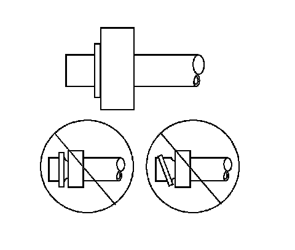

Sealing Washer Replacement
SEALING WASHER REPLACEMENT
REMOVAL PROCEDURE

1. Remove the seal washer from the A/C refrigerant component.
2. IMPORTANT: Cap or tape the open A/C refrigerant components immediately to prevent system contamination.
Inspect the seal washer for signs of damage to help determine the root cause of the failure.
3. Inspect the A/C refrigerant components for damage or burrs. Repair if necessary.
4. IMPORTANT: DO NOT reuse sealing washer.
Discard the sealing washer.
INSTALLATION PROCEDURE
1. IMPORTANT: Flat washer type seals do not require lubrication.
Inspect the new seal washer for any signs of cracks, cuts, or damage.Do not use a damaged seal washer.
2. Remove the cap or tape from the A/C refrigerant components.
3. Using a lint-free clean, dry cloth, clean the sealing surfaces of the A/C refrigerant components.
4. Carefully install the new seal washer onto the A/C refrigerant component.The washer must completely bottom against the surface of the fitting.
5. IMPORTANT: After tightening the A/C components, there should be a slight sealing washer gap of approximately 1.2 mm (3/64 in) between the A/C line and the A/C component.
Assemble the remaining A/C refrigerant components. Refer to the appropriate repair procedure.